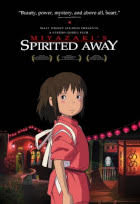

.jpg)
Adelaide e Gabe levam a família para passar
um fim de semana na praia e descansar.Eles
começam a aproveitar o ensolarado local,
mas a chegada de um grupo misterioso
muda tudo e a família se torna refém de seres
com aparências iguais às suas.

Chihiro e seus pais estão se mudando para uma
cidade diferente. A caminho da nova casa, o pai
pegar um atalho. Eles se deparam com uma mesa
repleta de comida, embora ninguém esteja por perto.
Chihiro sente o perigo, mas seus pais começam a comer.
Quando anoitece, eles se transformam em porcos.
Agora, apenas Chihiro pode salvá-los.
.jpg)
Após Thanos eliminar metade das criaturas vivas,
os Vingadores têm de lidar com a perda de amigos
e entes queridos. Com Tony Stark vagando perdido
no espaço sem água e comida, Steve Rogers e Natasha
Romanov lideram a resistência contra o titã louco.
.jpg)
Harry Potter é um garoto órfão que vive infeliz com seus
tios, os Dursleys. Ele recebe uma carta contendo um convite
para ingressar em Hogwarts, uma famosa escola especializada
em formar jovens bruxos. Inicialmente, Harry é impedido de ler
a carta por seu tio, mas logo recebe a visita de Hagrid, o guarda-caça
de Hogwarts, que chega para levá-lo até a escola. Harry adentra
um mundo mágico que jamais imaginara, vivendo diversas aventuras
com seus novos amigos, Rony Weasley e Hermione Granger.
.jpg)
Um autor de romances criminais encontra uma caixa
com filmagens antigas de crimes horripilantes, que
parecem ter sido cometidos por um assassino em série.
Ao investigar, ele e sua família se tornam alvos
de uma entidade sobrenatural maligna.
.jpg)
O casamento de Lady Di e o príncipe Charles esfriou há
muito tempo. Embora os rumores de casos e divórcio
sejam abundantes, a paz reina nas festividades de Natal
na propriedade de Sandringham. Há comida, bebida, tiro
e caça. Diana conhece o jogo, mas este ano as coisas
serão muito diferentes. Spencer conta a história do que
aconteceu durante aqueles dias decisivos.
.jpg)
Conheça a história de T'Challa, príncipe do reino de
Wakanda, que perde o seu pai e viaja para os Estados
Unidos, onde tem contato com os Vingadores. Entre
as suas habilidades estão a velocidade, inteligência
e os sentidos apurados.